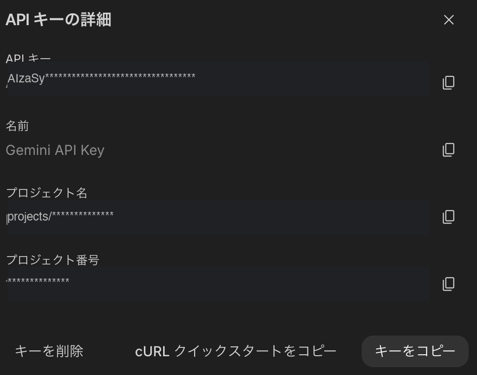

はじめにGemini APIキーの取得が必要です（無料・3分）。
初回のみ「Welcome to AI Studio」画面が表示されます。
上のチェックボックス（I acknowledge...）にチェックを入れて、右下の「続行」ボタンを押してください。
下のチェック（メール受信）は任意です。
キーの一覧画面が表示されます。
「APIキーの詳細」画面が開くので、右下の「キーをコピー」ボタンを押してください。
コピーしたキーを下の入力欄に貼り付けて「保存して始める」を押してください。
キーはこの端末にのみ保存されます。サーバーには送信されません。
気になるサイトのURLを入力してください
サイトの内容をコピー＆ペーストしてください
このURLには広告プラットフォーム（Facebook広告等）のトラッキングパラメータが含まれています。
広告経由の詐欺サイトでは、広告審査やセキュリティチェックをすり抜けるために「クローキング」と呼ばれる手法が使われることがあります。これはアクセス元を判別し、審査用のボットには無害なダミーページを表示し、実際のユーザーには詐欺コンテンツを表示する手口です。
そのため、以下のAI分析結果は、あなたが実際にブラウザで見ているページとは異なる内容に基づいている可能性があります。
より正確な分析を行うには、ブラウザで実際に表示されているページの内容をコピーして「テキスト貼り付け」モードで再分析してください。
この結果はAIによる参考分析であり、現時点での対象ページおよび同一ドメイン内の関連ページ（会社概要・特商法等）の内容を対象としています。企業の過去の行政処分歴や評判は分析対象外です。正当なサービスでも一部の指標が低くなることがあります。レーダーチャートの形状と詳細所見を参考に、最終的な判断はご自身で行ってください。
Google AI Studio でAPIキーを取得・確認できます
通常は空欄のままで問題ありません。独自Workerを使う場合のみ入力してください。